The Udder Way
One simple system
for your kegs.
Three mobile apps and one dashboard. Run the operation. Manage the stock. Every fill leaves a fingerprint on the keg — who filled it, what went in, and when.
Orders, runs, scans, and a live map. No spreadsheets. No “where did that keg go?”
No module matches that search.
Start here
A keg goes out full. It comes home empty. Then it goes again.
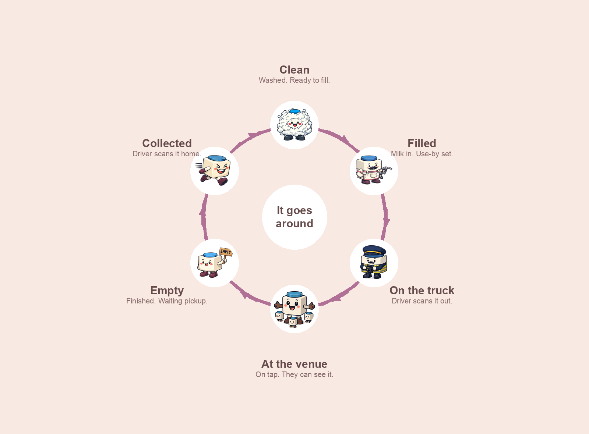
The keg
18 litres. Food-grade. Washed and filled at the dairy. One keg replaces a crate of bottles.
Who uses what
Dairy fills and cleans. Driver delivers and collects. Venue orders and pours. Dashboard is the same picture, on a computer.
The Udder Dairy
Everything the plant needs, one tap away.
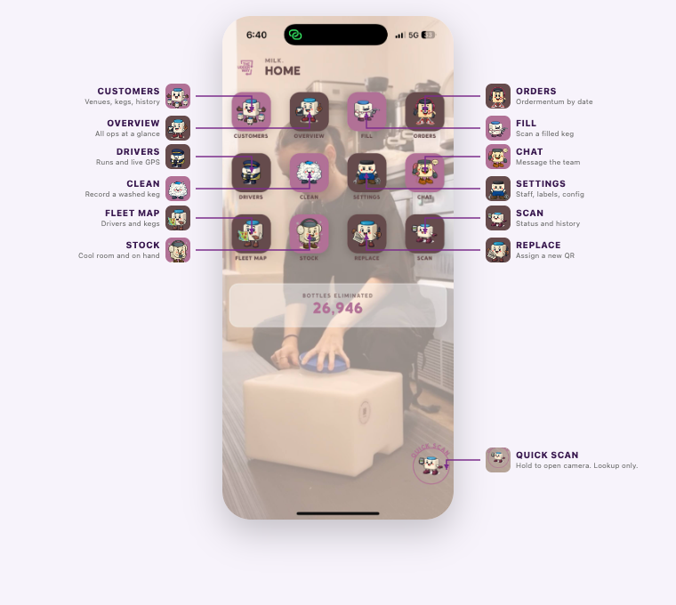
Dairy · after every wash
Clean
Wash the keg first. Then scan it. That is what moves it from needs-cleaning to ready to fill. If you do not scan it, it will not appear in the fill queue.
- From Home, tap Clean.
- The camera opens. Point it at the QR on the keg. It reads by itself.
- Check the keg ID. Tap Confirm Clean.
- The scanner stays open. Scan the next keg.
Dairy · after every fill
Fill
Every fill leaves a fingerprint on the keg: who filled it, what went in, and when. That record is what you use later if a venue asks about a keg.
- Tap Fill. Pick the product first. Blue lid is full cream. Pink lid is lite milk.
- Scan the QR.
- The app sets the use-by from the product. Take the operator photo.
- Confirm. The keg moves into the cool room and can go on a run.
Dairy · every morning
Stock
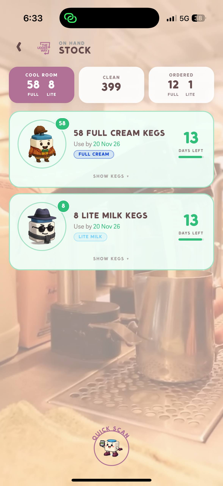
Stock is what is physically at the dairy. Cool room is filled and ready. Clean is washed and waiting. Ordered is what venues have asked for on the next run.
Each cool-room batch shows product, use-by, days left, and the keg IDs. If a keg is on 0 days, pull it. Do not deliver it.
Dairy · daily
Overview
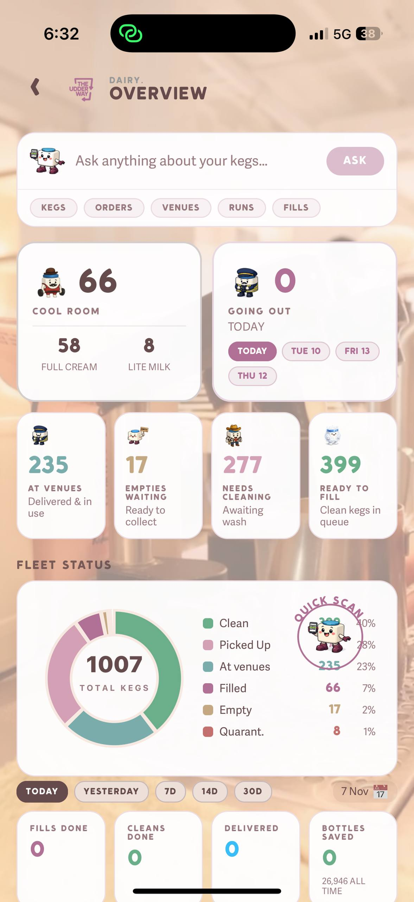
The morning picture: kegs at venues, empties waiting, kegs that need a wash, kegs ready to fill, and what is going out today.
The activity tab is the log. Fills, cleans, and deliveries, with the person who did them. Use it when someone asks what happened yesterday.
Dairy · delivery days
Orders
Orders come from Ordermentum. You do not retype them. They are grouped by delivery date, not by invoice due date.
Tuesday orders close Monday evening. Friday orders close Thursday evening. Compare the full-cream and lite totals with the cool room. If you are short, fill before the driver leaves.
Dairy · delivery days
Drivers and the fleet map
Build the run, put the stops in order, assign the driver, then start the run when the truck leaves. As the driver scans, the dairy app updates. You do not need to call them to know a stop is done.
Fleet map is the same run on a map. Driver position while they are on the road. Venue pins for kegs already out.
Dairy
Customers
Every venue you supply. Open one to see kegs on site, empties waiting, and whether they are a normal venue or a vendor.
A vendor is a place that can receive kegs again without the usual pickup path. The driver app treats those kegs as a delivery, not a collection.
Dairy · admin
Staff
Settings, then Staff. Drivers and factory staff log in with a PIN. Admins log in with email and password.
| Role | App | They can |
|---|---|---|
| Driver | Driver | Today’s run, scan deliver or collect, chat |
| Factory | Dairy | Fill, clean, scan |
| Admin | Dairy | Customers, orders, runs, stock, reports |
| Super admin | Dairy | All of that, plus staff and settings |
Dairy · as needed
Scan, history, replace, quarantine
Scan a QR to see the keg’s story: status, venue, use-by, who filled it, and where it has been. That is the fingerprint.
Replace is for a damaged label. The new sticker keeps the same keg history. Do not treat it as a new keg.
Quarantine takes a keg out of circulation: expired, damaged, contamination, or a fill that should not have happened. Only an admin releases it, and it comes back as needs-cleaning. Wash it before it is filled again.
Dairy · the week
Tuesday and Friday
| Day | What happens |
|---|---|
| Monday | Tuesday orders close. Check quantities. Fill if the cool room is short. |
| Tuesday | Run the deliveries. Collect empties on the same run. |
| Wednesday | Clean what came home. Start filling for Friday. |
| Thursday | Friday orders close. Finish the fill. Build Friday’s run. |
| Friday | Second run. Same as Tuesday. |
| Weekend | Clean Friday’s empties. Look at the week on Overview. |
All apps
What a keg status means
| Status | It means | Next |
|---|---|---|
| Ready to fill | Clean, in the queue | Fill |
| Filled | In the cool room | Put it on a run |
| Picked up | On the truck | Driver delivers it |
| At venue | On tap | Watch the use-by. Collect when empty. |
| Empty | Finished, still at the venue | Collect on the next run |
| Needs cleaning | Home, not washed | Wash, then scan Clean |
| Quarantined | Out of circulation | Admin releases it back to cleaning |
The Udder Driver
The driver only sees today’s work.
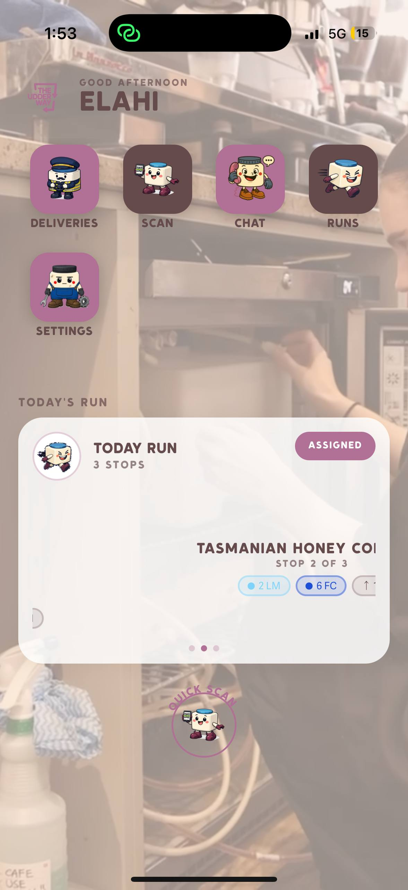
Under the icons is today’s run: stops, kegs to drop, kegs to pick up. Open a stop, scan, move on. The dairy sees it the moment they scan.
Driver · on the road
Scan the keg. The map does the rest.
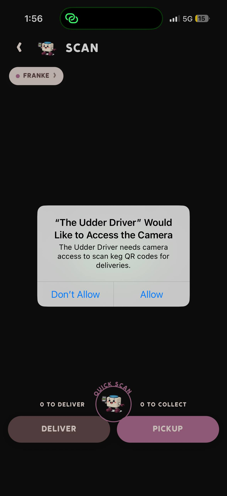
Scan — deliver or collect. Status changes by itself.
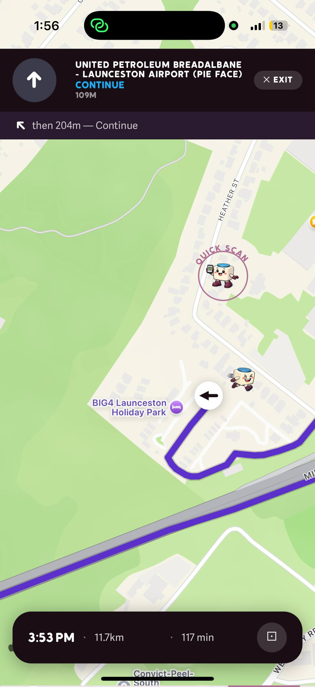
Next venue, how far, how long.
- Open the stop. Check how many kegs go out and how many come back.
- Scan each keg you leave. Scan each empty you take.
- Finish the stop. The next venue opens on the map.
The Udder Venue
The café does not need a training day.
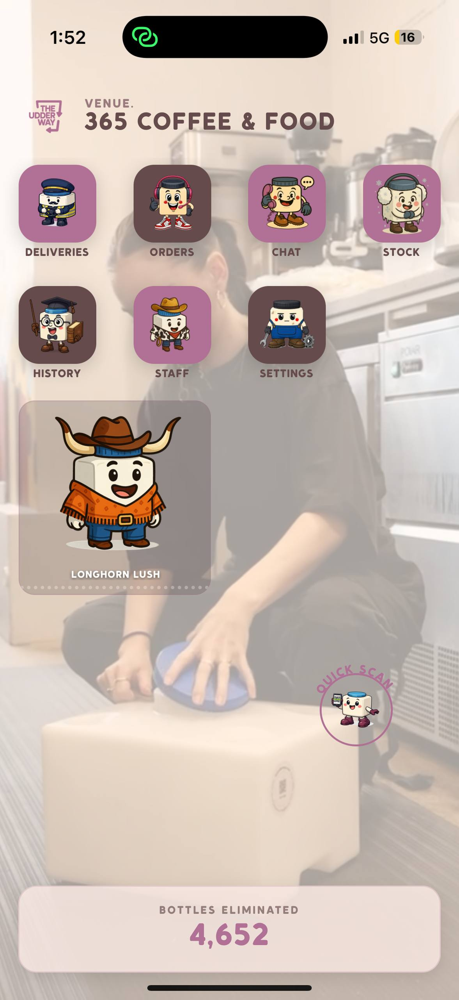
Venue
They can see the milk, and the driver.
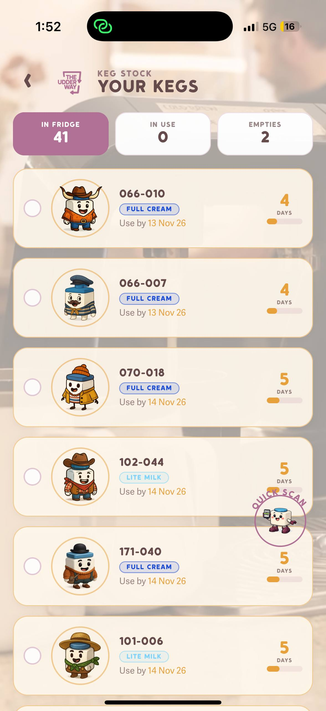
Type, use-by, and how long it has been there.
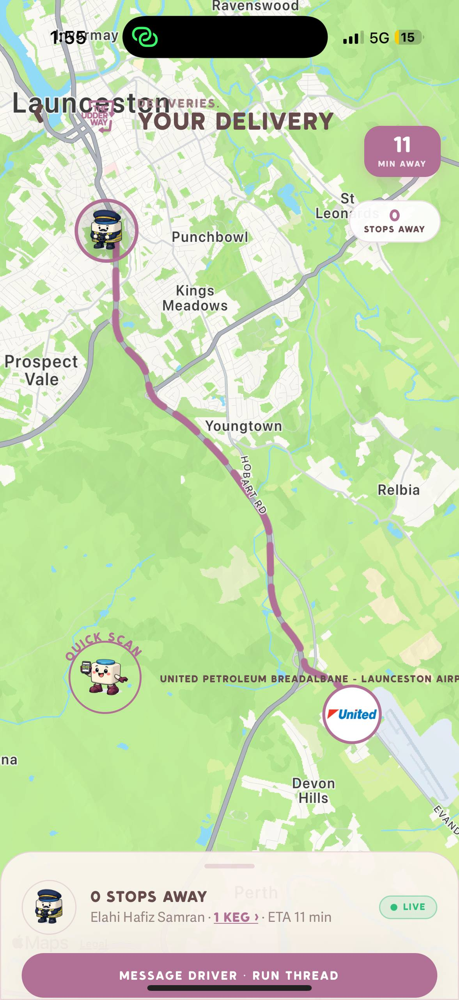
Minutes away, who is driving, how many kegs.
A venue only sees their own place. They do not see other venues, and they do not see the dairy’s whole stock.
Dashboard
The same story, on a computer.
Owners use theudderdairy.com for the week, not for scanning a keg. Phone scans still do the work. The dashboard is the big screen.
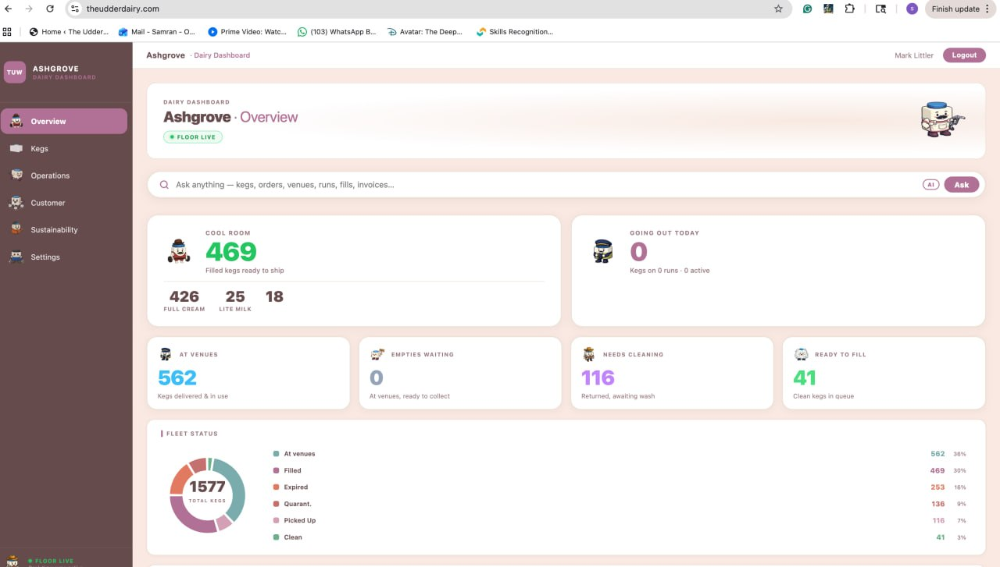
Today — filled, out, back, bottles replaced.
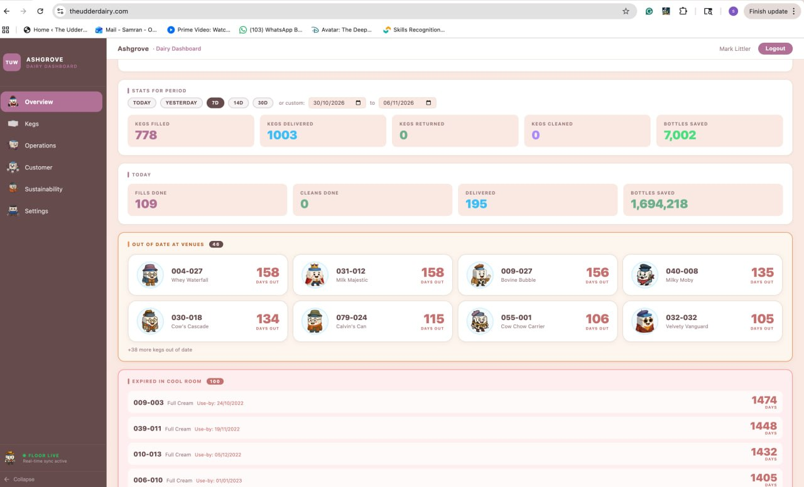
The week or the month, not just this morning.
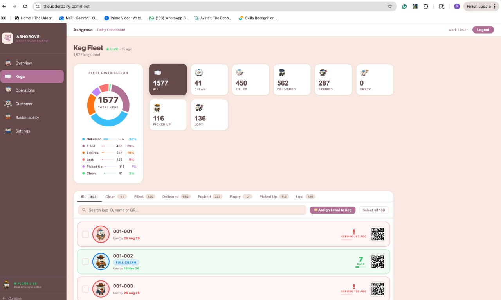
Every keg, with its status.
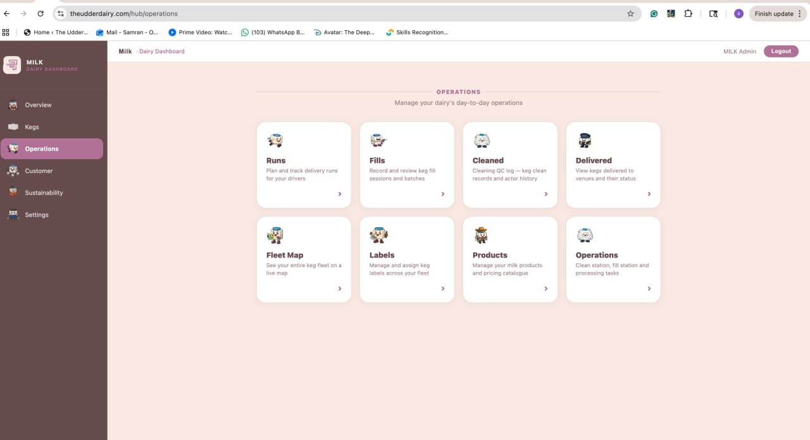
Runs, fills, cleaning, products — one place.
After you say yes
We set it up. You pour milk.
1. Your dairy
Name, products, delivery days, staff. We load the kegs you already have.
2. Your people
Dairy logins, driver PINs, venue PINs. Each person gets the right app.
3. First run
Fill, deliver, collect, clean. You watch it on the phone and on the dashboard.
Onboarding PDF: TUW-onboarding.pdf
Questions: tech@theudderway.com